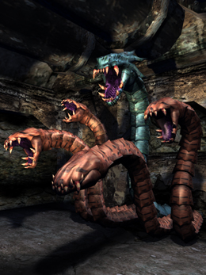
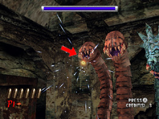
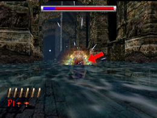
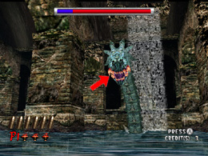

HOD2 TOWER
ボス攻略 HOD2

「TOWER」は5つの首を持つ巨竜だ。「TOWER」を倒すには、まずは
茶色い4つの首を全滅させる必要がある。
茶色い首が噛み付き攻撃をしてくるときに口が光るので、その瞬間を
狙い撃ちしろ。口が開ききっていなくても、口が光ったら構わず
狙い撃ちするのがポイントだ。
また、口が光っていなくても、うっすら口が開いている時はダメージを
与えることができるぞ。

茶色い首を全滅させると、奥の部屋で青い首との一騎打ちになる。
青い首は激しく移動しながら噛み付こうとしてくるが、口が光っている間に、
口を狙って連射すれば難なく倒せるはずだ。

せまってきても、最後に口を大きく開けて攻撃してくるので、その瞬間を
狙うんだ。あきらめずに連射するように。

ルートによって、水場と砂場での対決に分かれる。だが、口が光る
タイミングが若干異なるだけで、基本的な攻略パターンは同じだ。
 RSS
RSS